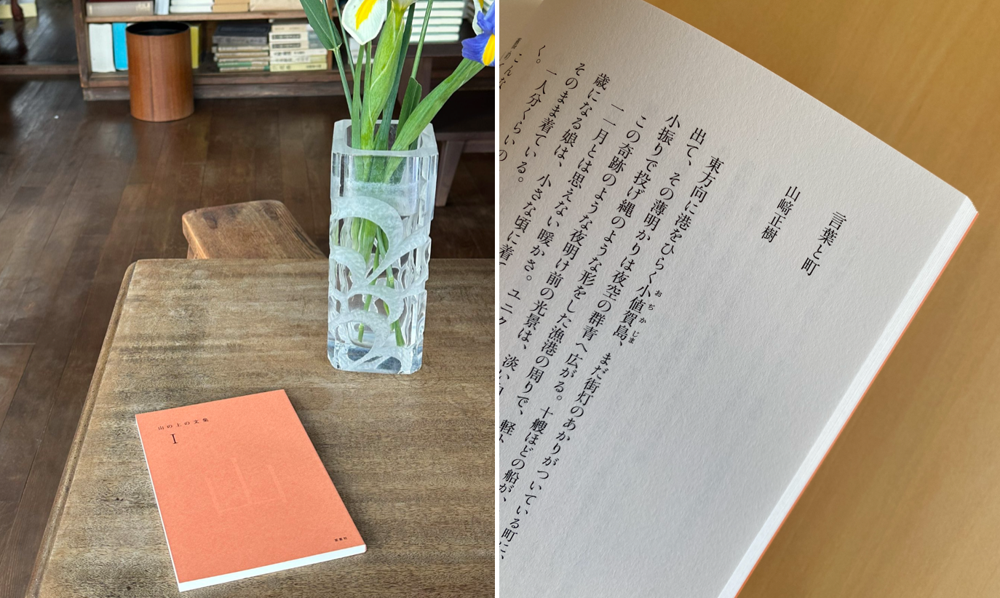

TORANOMON HILLS PROJECT

虎ノ門エリアの都市再生・再開発プロジェクト。都市計画や環境アセスメントを担当。都市計画提案後は、住宅棟の商品企画・管理企画、販売プロモーションWEBサイト・動画制作・PR等のディレクション、棟内店舗区画のカフェとクリニックの設計・施工に係るプロジェクトマネジメントを担当。 10年超に渡る大規模再開発プロジェクトの立上げから竣工までの一連に関わる。
都市再生・開発計画（都市計画・商品企画・管理計画・施設企画） 調査分析・コンセプトメイキング・企画書作成・コミュニケーション企画・PM ｜ 2011-2022
PR －Town Managment
タウンマネジメントのPRとして、日々の取材調整・対応、週1本以上のプレスリリース配信、プロカメラマンの撮影ディレクションなどを担当し、現場を走り回る。大規模イベント時のPR企画・計画・現場対応なども担当。
タウンマネジメント コミュニケーション企画 ｜ 2015-2018
PROMOTION －Town Managment
「六本木ヒルズクリスマス」におけるプロモーションのディレクションを担当。クリエイティブディレクション、街・館内全体の装飾、ガイドブック制作、駅構内・電車内広告、イベント企画、PR（リリース配信・取材対応）などを実施。
タウンマネジメント 編集・コミュニケーション企画 ｜ 2015
HILLS BREAKFAST

月1回開催するヒルズの朝のトークイベント。イベント運営・登壇者依頼などを担当。オフィスワーカー等のボランティアスタッフと共同し、会場設営から現場運営までトータルに行う。
タウンマネジメント イベント企画 ｜ 2016-2018
研究活動 －都市再生・都市開発・都市計画・市街地整備等

大学・大学院にて、地区計画や都市開発の観点から都市計画や市街地整備をテーマとし、修士論文では、都市開発と公共空間との空間的連携性・関係性を研究。 2019年から日本大学客員研究員として、ハード・ソフト共に多様な取組みを連鎖的に展開するミクスト・スケールな開発により、社会的価値の創出に寄与する方法論「エリアディベロップメント」の研究に取組む。
都市調査・研究 研究企画・実施 ｜ 2008-
パブリックライフ研究会

旧・公共空間の『質』研究部会（国土政策研究会）の「公共空間評価指標研究会」から、2024年からJ-SURP（日本都市計画家協会）の「パブリックライフ研究会」となる。初回からメンバーとして参加（一時不参加）。評価指標開発、「まちなか広場賞」の表彰事業（2015-19）、各地の視察や意見交換等などを行う。
都市調査・研究 研究企画・実施 ｜ 2014-（＊2015-2018不参加）
ソトノバ

公共空間に関する関心が高まりつつある時期、国外・国内のパブリックスペースに関する情報発信を行うWEBマガジン「ソトノバ（sotonoba.place）」を立ち上げ。立ち上げ当時、副編集長として、メディア企画方針、クリエィティブ制作、記事制作などを行う。
プロジェクト発起 プロジェクトメイキング・メディア立上げ・編集・取材・ライティング ｜ 2015-2016（＊PJ関与終了・PJ自体は継続中）
come on toranomon
虎ノ門の地元クリエーターと共に、今すぐできるまちづくりをテーマとして、地域活動団体を立ち上げ。地元クリエーターにより制作された、虎ノ門エリアを盛り上げるゆるキャラ「カモ虎課長」が虎ノ門の情報発信を行う。地域の人らが、自身の地域で活動するプロジェクトの立ち上げを行う。
プロジェクト発起 プロジェクトメイキング（地縁型） ｜ 2013-2014（＊PJ関与終了・PJ自体は継続中）
五島列島シマカイ

東京と長崎・五島の若者で五島を盛り上げる五島列島若者会議（のち五島列島シマカイ）を立ち上げ、共同代表として主宰。 5年以上の活動は多岐に渡り、東京での若者討論・ワークショップ、五島現地での滞在型ワークショップ、五島の食材を東京で紹介・販売するマルシェ、五島の食と事を体験できる食事イベントなど、東京からできる地方活性を思索・実践した。
プロジェクト発起 プロジェクトメイキング（地縁・テーマ型） ｜ 2013-2017（＊PJ終了）
MEANINGFUL CITY

「価値」ではなく、「意味」から都市を見つめ直す。 まちづくりに関わる「作り手」と、街を舞台に活動する「使い手」の分断への問題意識から、両者一緒に理想の都市を考え、コミュニテイの融和を目指す活動体として分野横断型プロジェクトをクリエーターと共に立ち上げ、主宰。 2021年5月に「MEANINGFUL CITY MAGAZINE」を創刊。第二号は、代官山蔦屋書店とのフェア企画を実施し、反響を呼ぶ。
プロジェクト発起 プロジェクトメイキング（テーマ型・横断型）・メディア立上げ・編集・取材・ライティング ｜ 2018-2023
夕べ －文筆サークル
都市・まちづくりの業界内・外の人とプロジェクトを通して、議論や表現のツールとしての「言葉」へ関心が高まる。「発せられる・記される言葉」と「言葉では現れない情景」の両面を探求すべく、主に「まち」を舞台にした文章執筆に取り組む。”わたし”の視点から、たくさんの生き活きできる「まち」を、共有化する方法を探求する。
－ ライティング・コンセプトメイキング ｜ 2023-